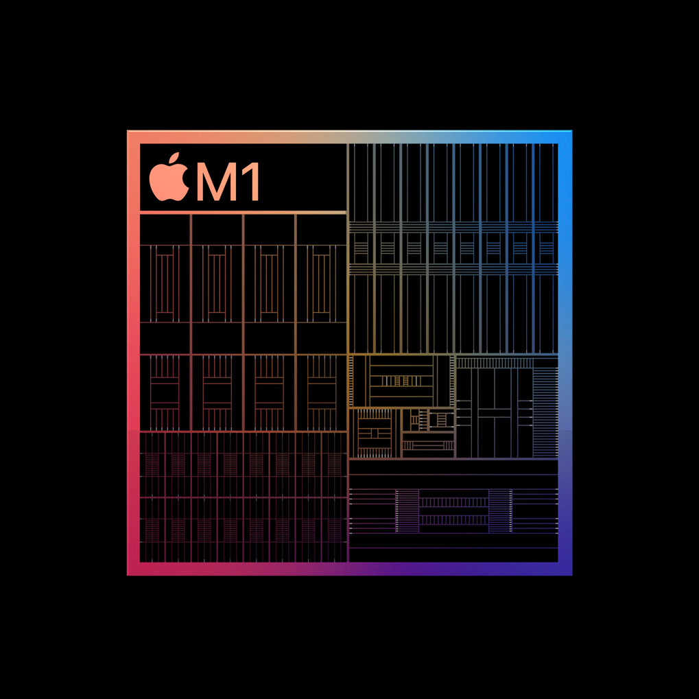
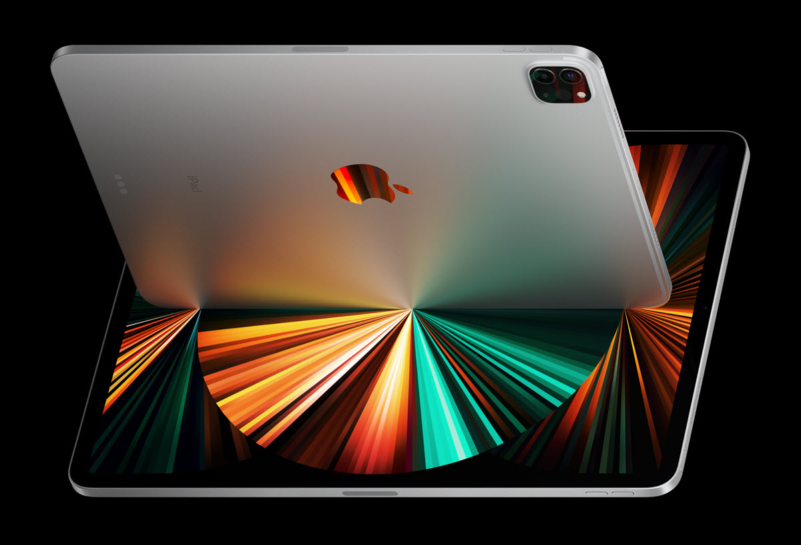
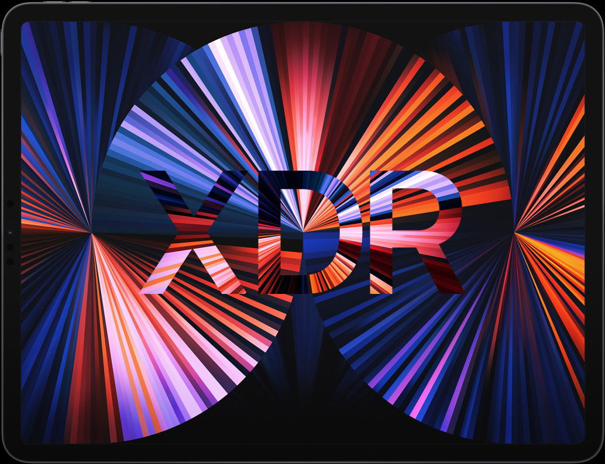
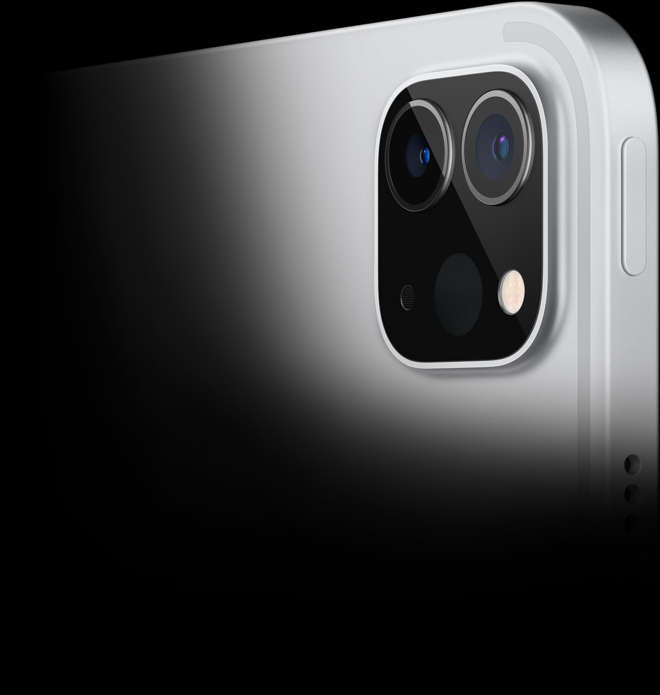
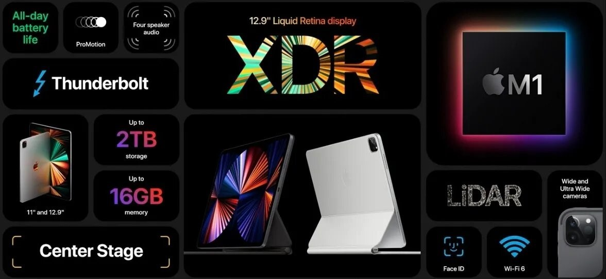

El iPad en su máxima expresión. Un rendimiento fuera de serie con el chip M1, una espectacular pantalla XDR y conexión inalámbrica ultrarrápida.

El nuevo iPad Pro es el dispositivo más rápido de su categoría. Está diseñado para aprovechar la potencia y las tecnologías exclusivas del chip M1, como el procesador de señal de imagen avanzado y la arquitectura de memoria unificada. Y gracias a la increíble eficiencia energética del chip M1, el iPad Pro sigue siendo delgado y ligero, y tiene una batería que te acompaña todo el día. Es una asombrosa combinación de potencia y portabilidad.

Rendimiento y gráficos más rápidos. El chip M1 tiene un CPU de 8 núcleos que ofrece un rendimiento hasta un 50% más rápido y un GPU de 8 núcleos único en su clase que acelera el rendimiento gráfico del iPad Pro hasta en un 40%. Podrás crear modelos de realidad aumentada complejos, jugar con gráficos dignos de una consola a una alta frecuencia de cuadros y mucho más.
Pantalla Liquid Retina XDR de 12.9".
Una superioridad brillante.

El rango dinámico extremo llegó al iPad Pro de 12.9 pulgadas.2 En la pantalla Liquid Retina XDR todo se ve impresionante. Las imágenes cobran un gran nivel de detalle y realismo gracias a la relación de contraste 1,000,000:1.
Es perfecta para ver y editar fotos y videos HDR o disfrutar de tus películas y series favoritas. También tiene 1,000 nits de brillo en toda la pantalla y 1,600 nits de brillo máximo, y tecnologías avanzadas como una amplia gama de colores P3, True Tone y ProMotion.
Cámaras.
Tienes que ver esto.
Con las cámaras gran angular y ultra gran angular puedes lograr fotos y videos asombrosos. Incluso puedes configurar un sistema multicámara muy pro para tus producciones audiovisuales. Y gracias al potente procesador de señal de imagen del chip M1, el iPad Pro ahora viene con HDR Inteligente


Más poderoso.
Igual de accesible.
El nuevo iPad combina una extraordinaria capacidad con una versatilidad y facilidad de uso inigualables. Cuando descubras las posibilidades que te ofrece el potente chip A12 Bionic, la compatibilidad con el Apple Pencil y el Smart Keyboard, y todas las increíbles cosas que puedes hacer con iPadOS 14, vas a disfrutarlo más que nunca.

El iPad es la mejor herramienta para darle rienda suelta a tu curiosidad. Descubre en el App Store apps que te ayudarán a estudiar geometría, aprender un idioma o crear tu propia música. Incluso puedes usar la realidad aumentada para aprender algo emocionante: revive la historia de los viajes espaciales en tu sala o mira cómo los personajes de tu libro favorito cobran vida.
Juega a otro nivel.
Prepárate para jugar en grande.
El chip A12 Bionic ofrece un rendimiento excepcional para que disfrutes de juegos inmersivos donde todo fluye y el nivel de detalle es increíble. Enlaza tu iPad a un control PlayStation DualShock 4 o un control de juegos MFi, y tendrás la consola de juegos portátil perfecta. ¿Quieres aún más diversión? Prueba Apple Arcade y accede a cientos de juegos con una sola suscripción y sin anuncios.
En el iPad todo se ve y suena increíble gracias a la pantalla Retina de 10.2 pulgadas y al sistema de audio en estéreo. Y con la app Apple TV puedes acceder a los servicios de streaming más populares, a las series que no puedes dejar de ver y a los últimos estrenos de películas. Además, cuando compras un iPad nuevo obtienes un año de Apple TV+, un nuevo servicio de streaming con series y películas originales creadas por las mentes más brillantes del cine y la televisión. Sólo ve por unas palomitas y empieza a disfrutar del mejor entretenimiento.
Un mayor rendimiento
en un tamaño más ligero.
El iPad mini es famoso por su tamaño y versatilidad. Y ahora, con toda la potencia del chip A12 Bionic con Neural Engine, una pantalla Retina de 7.9 pulgadas con True Tone y el Apple Pencil, se convertirá en toda una estrella. Prepárate para llevar tus mejores ideas al máximo con el iPad mini que ya conoces, ahora más poderoso que nunca.
Llevalo donde la inspiración te lleve.
El iPad mini tiene un diseño delgado, ligero y portátil que lo hace perfecto para ir contigo a todos lados. Con tan sólo 6.1 milímetros de grosor y 300.5 gramos de peso1, es muy fácil llevarlo en la mano o sacarlo de tu bolsa o mochila cuando te llegue la inspiración.
Una potencia muy superior a su tamaño.
El chip A12 Bionic con Neural Engine ofrece un nivel extraordinario de potencia e inteligencia. Este chip usa el aprendizaje automático en tiempo real para reconocer patrones, hacer predicciones y aprender de experiencias anteriores. Con toda esta potencia, podrás disfrutar de apps como Adobe Photoshop CC*, realidad aumentada o juegos inmersivos con gráficos tan sorprendentes como los de una consola.
La grandeza de una increible resolución.
El iPad mini tiene una pantalla de 7.9 pulgadas con más de 3 millones de pixeles que aprovecha al máximo. Ya sea que estés leyendo en el parque o editando un video en la oficina, verás todo con un nivel de detalles sorprendente y gran nitidez, gracias al alto brillo, la amplia gama de colores y el revestimiento antirreflejo. Y para que las imágenes se vean naturales con cualquier luz, la tecnología True Tone ajusta el balance de blancos de forma dinámica.
100% compatible con Apple Pencil.